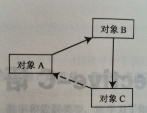

编写Objective-C代码的很大一部分工作是管理可执行代码保持的对象引用，还有被引用对象保持的对另外一个对象的引用。在ARC出现之前，Objective-C在IOS中使用手动内存管理，在OS X中还可使用垃圾回收机制。这两个方法都有他们各自的优缺点。现在Objective-C使用ARC，其结合了这两种方法最好的一面。
ARC，中文简称自动引用计数，是一种编译器机制，在编译期间编译器将手动内存管理的调用插入到代码中。这段内存管理代码通过判断一旦对象没有任何进来的强引用，它将被释放，如果它是最后一个持有另一些对象强引用的对象，则这些对象也会被释放，对它们的其他对象的处理以此类推,编译器非常智能，ARC代码被优化的很好。尽管ARC将开发者从编写手动内存管理代码的工作中解放出来，但如同使用垃圾回收的平台，它仍然不能打破引用循环。因为这个原因，开发者需要给编译器某些指导以避免引用循环。下图展示了一个引用循环：

只有对象C释放了对象A后其才能被释放，而只要对象B有一个对它的强引用那么对象C就永远不会被释放。最后，除非对象A被释放否则对象B永远不会被释放。这就是一个引用循环，将导致引用程序发生内存泄漏。
但是，如果我们在上图中将对象C持有的对象A的引用（在途中用实线表示）被替换成一个弱引用（用虚线表示），如下图

弱引用不阻止对象被释放，所以对象A被释放，接着是对象B，最后是对象C。
如果熟悉C或C++，你可能会注意到一个使用弱引用的问题。如果对象可在任何时候被释放，并且你有一个该对象的弱引用，那么最终会得到一个悬空指针（这个指针的地址指向的地址仍然存在，但是对象已经被释放）。在ARC中，这个现象不会存在，一旦对象被释放则指向这些对象的弱引用将会变为nil。
Objective-C中，默认情况下，没有使用任何关键字的声明的实例变量和局部变量都是强引用，将变量声明为弱引用需使用weak关键字。
如何在写代码的时候判断变量是该用强引用还是弱引用？
一个常见的方法就是将强引用和弱引用分别想象为“拥有”和“被拥有”。如果一个对象完全属于包含它的对象，那么它使用强引用。如果一个对象被两个以上的对象所拥有，并不完全属于一个对象，则使用弱引用，尽管该方法不是对于所有引用逗适用，但它确实是一个记住Objective-C内存管理约定的好技巧。